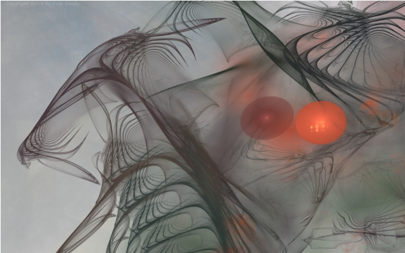

Jewel (Part 2)
by
Andy Robertson
It has taken me some time to recover. The Doctors say I touched It, and that I would have been sorbed if the contact had lasted a few tenths of a millisecond longer. But the Array triggered in time, I escaped, and the spirit is soft with life and regenerates easily. For days I seemed only half-conscious, as if I was on the edge of a faint, remembering the immediate past and the blurry near-present normally but not truly here, not properly integrated with my body, unable to exert my will, seeing things happen but not involved with them. Each day was like a story told to me at second hand. I remembered being conscious, I anticipated being conscious, but I was not conscious.
Now I awake, or regenerate slowly, and I am aware mostly of a deep tiredness. At least the mara do not visit me. There is nothing left within me to Eat. My body seems to act of its own accord. My minds, too run along without supervision. I am a passenger, slowly taking control again. It is as if all my life I have been the master of a horde of slaves and now they act without my permission, by habit only, but mostly by their custom and according to my will. People come to visit me, I open my mouth, and the whole conversation passes as in a dream, without my will being engaged. Yet the horde of slaves is nearly all of Me. It is all of Me, except that part the dark one sought to Eat.
What did I learn? I had not thought to speak or negotiate: only to risk the simplicity of looking, of seeing what was blank and meaningless numbers to the mechanical sensors. The Doctors have checked, and the Censors have double-checked, that I am still human.
It did not speak to me, but when it touched me I learned something very simple. I wonder what it learned from me.
Three weeks, they say, until I can speak to the Civitas. While I recover I may at least amuse myself.
The Cannon overlooks the eastern quadrant of the Land. He is named The Father's Angry Shout Of Reproof.
In this sector there are fifteen major concentrations of life. Four are harmless geotheres that settled into quiescence two thousand years past. One clangorous pit is a nest of scavenging manshonyaggers. Seven other groups are abHuman communities, scattered half-human cultures of temporary residence and ambiguous status pressing hard against the constraints of existence in the Land: their technology will never rise above molten iron and lava glass blades, for if they become too intelligent they are prey for pneumavores and vanish. And two loci show wandering twists of space that seem to radiate some intelligence but take no action.
The larger and more distant threats need not be mapped because they are eternal. The Thing that Nods has not shifted within the reach of any record, and the Dark Palace holds its frigid layers of machine knowledge inviolate and threatens only the dreams of children. The two adjacent Watchers are not even to be viewed without conceptual shielding, of course: cybernetic illusions are employed to mask their faces in the Cannon's gunSight, and simple wielded iron baffles prevent any worker engaged in physical repair of the mounting from seeing what would kill them.
The titanic cylinder swivels smoothly through the space above us, and the control arena is recessed into the curved floor beneath it. I sit at the back, in honored convalescence, plumped on cushions. Bal stands at the center, wearing the gunSight like an ancient helm, and behind him Mannan balances the trips vertically on his palms, mercury trembling over the contacts. The force screen generated by the Circle must allow the cannon's beam Out, and must allow certain radiations and signals in, and so in the heat of battle some thing might enter here, but it could never act so smoothly and swiftly that it could take over the cannon's mind or His master's before Mannan could spill those trips and cut off all power. So the co-gunner's flesh and soul are the armour of Mother Redoubt.
The scan continues. It caresses the borders of the Dead Titan, a hill of ruin two leagues south-east from the Circle: touches on the foot of the Vane Light that drifts close by it; glances up at the distant shining of the Kilns; slides away, and leaps swiftly to pin hexapod beasts that surround a clump of debris they are dragging to their hive. It judges them no threat and continues to move at random across the Land, focusing on beast and giant, mechanism and structure, shadow and light, and from time to time asking Bal, Shall I Fire? But the cannon has not been discharged for decades. Threats are rare and fewer still are counted worthy of aggressive action. Almost none. I feel a tension in the aether which must emanate from the machine. He is being held back from his desire.
Bal is beautiful as he dances with the ancient weapon. His hands dart unhesitatingly across the touchpoints while his hidden eyes drink the Land, each flat saccade traced by the gunSight and reflected by the great slaved cylinder above us. The doubled image on the screen before him shivers with computer generated enhancements and suggestions, overlaid contours and classifications, each one of which has the tiniest reflection in his face and a thin echo in the telepathic vibrations of his pneumasome. His body, his eyes, his hands and his mind are one intention and one action: joy, the wholeness of user and tool, the most ancient role of human kind.
I glance back at Mannan, still and upright as a statue, and he laughs and swaps the trips palm to palm, keeping them vertical, without missing a beat. The smooth purr of the earth-current driven motors is uninterrupted and I smile to acknowledge the feat.
No wonder Nenne loves Bal: he is as slim and agile as a dancer and as strong as a warrior. When the Scan is over and he doffs the Sight, his face shines with joy. Any woman would run to him.
The trips. Now that is an interesting technique.
The pneumavores cannot be fought by any merely human speed, but only by successively interdicting whole volumes of space. Yet they cannot sorb a subject fast enough to retain fine motor control over their body. The trips serve as failsafes.
An interesting technique. But it is a technique that requires two men.
Now it is Mar who cries and writhes in the grip of the night mara, while I awake. I am deadly tired, and cannot spare the will to wake her and sooth her. A million others are so haunted: it is worse every year. And after all I am in honored convalescence, after a heroic act that millions would envy, and I need not trouble myself to spare an old woman pain.
About half of one percent of the population of the Redoubt are afflicted by them: and the proportion is slowly, surely, increasing as generations pass. It is not random. Once Visited, a sufferer will be transported again and again by unknown dreams, each dream different, at irregular intervals for the rest of their life. It is a a process that is unblockable by drugs or medicine or any meditation. Yet many of my peers still insist on treating the mara as viral dreamshares of human origin. Now I have met them myself, I am doubly sure they are not.
Morning. And Mar weeps again. For all her past beauty and all her enduring gentleness, she has never understood any thing at all, though I talked and talked and tried to explain to her. And she has never known hurt like this.
She asks, When will it stop? She raises one hand to touch my face, and I put it down.
How long is it since we were lovers? When did we lose love? As the Earth-Current ebbs slowly, a little every day. Once, love and desire and pleasure renewed itself without needing any source, except itself. We thought it would be eternal: how very long ago that was. Yet she never really understood any thing or shared more than the flesh with me. She was a light and foolish person and she never changed, she never learned anything, and that foolishness was only redeemed by the fact that she really tried to do good. But when her beauty failed at last our love died. Nothing is left.
So why should I not do it?
Turn it in your hands again, over and over. Stare into another facet.
Hierodule, with a long hook, has opened seven-story compartments on body Vaala. They place in the highest, two wild pigeons in the second, the <<abhuman?>> in the third, taran in the fourth, a sheep in the fifth and as any vol should not be available for the sixth, brown taken from sanctity have been thrown in it. The seventh compartment yawned empty still.
Before fulfilment—it should good to make above hands of the god. The harmonous chains stretched from its fingers up to its shoulders also lagged, where the men, pulling they were made with two increases of hands to a level with elbows, and to arrive closely to each other against a stomach; they have been moved some times to sequences with small sharp pushes. Then tools were still. Fire roared
Popes have gone about, looking for man.
My eyes ache and burn. I close them, and cradle them in the palms of my hands to rest them a little, then look again at the hyperlinked scrolls of ancient text floating before me in the library screen.
Somewhere there is a hint, a legend, a meaning.
In fraction of second between understanding of telepathists hostile something in black color, nonexistence of a place and influence of furious, pernicious, mental impact against all alive essences within the limits of the Vessel, telepathists felt objects something as Dragons of ancient human knowledge, animal, cleverer than animal, demons, more material than demons, hungry whirlwinds alive and the hatred made by unknown means from thickness, insignificant matter between stars.
Truth? Truth? Truth?
Gradually people have come in the end of passes; they rushed to pearls of fire, gold vases, cups, torches, all their riches; offers became constantly more numerous and more magnificent. At last the person who was unsteady, the person, pale and disgusting with horror, a push, sends the child; then the small black weight has been noticed seen hands of the colossus, and has decreased in dark opening. Priests declined above edge of the big stone plate,—and the new explosion songs further celebrating pleasures of death and a new birth in eternity.
"What is the solution?"
The Star Chambers are cold and desolate. Here in Thule is no life, only the old men who rule. Yesterday I was one, but today I am the suppliant.
I have the answer, but I cannot tell it to them. It is on my tongue to say the whole truth. It grows within my soul. It rests in my throat like a black jewel. I need to vomit forth the knowledge that I have gained from the Night, yet I keep silence. I can lie to Monstruwacans. I can lie to my peers. At least by keeping silence, I can lie.
I tell them as much of the truth as I dare: and they perceive that I am holding back, as they must. They ask for reasons, they question, and what is so clear and obvious becomes shaded by their doubt, and I pick my way between lie and lie, saying just so much that is true and leaving just so much unsaid.
They demand proof, they demand truth, and I bring data, make correlations, shew patterns. I explain, without touching the core of what shall be done. As within, so without. As Above, so Below. That the sleep-time will be quiet: the unbearable things being whispered by the mara will be silenced. I explain, explain and reason, explain the sacrifice we must make, and they listen and reply and listen, without any of us ever saying any thing real.
And by absence, the thing is slowly defined. At last I see the knowledge in their eyes. They know what may not be said, not even here. By lying we have told the truth to each other.
They agree, they promise investigation, consideration, and now I know it will be done. And someone mentions a name, the name of that useful overChief who has gone Out and who supervised matters while I was at the window of the Bottle: and a quick glance of confirmation passes between us all. They will not speak or speik the truth to each other, but I know how they will look, across the room, when I have gone.
They know. They agree. But had I told them plainly what I intended, they would perforce have had to take and slay me where I stood.
"Bal, you are a warrior."
"Ser."
"And how often has the Shout of Reproof been discharged?"
"Three times in this last decade, respected Sir, which is the time that I and Mannan have been his Smiting Eye. Once when the Pattern Dancers came to lure the folk out, and had to be checked by our lightning; and once at command of the Watch, upon the rock of the bare Land, for what reason I do not know; and once when the Dead Titan shifted a limb, which we burned with three days' discharge."
"Have you ever struck out at one of the Powers?
"An Eater? Respected Sir, we do not enrage them. It is against Command."
"So you would not dare to fight an Eater with your bare hands?"
"No man can fight a pneumavore with his hands. Unless..." For an instant he is actually thinking, then he smiles, and a light of interest kindles above the fear-the-old-man-in-the-cave program running in the core of his brain. There is a lowering of barriers. Part of him has made a re-evaluation of his chosen mate's parent, moving me from threat to friend. "Ah. Respected Sir, I understand. Yes, I would"
"I am too old". I smile, and make the gesture of a man holding the trips and dropping them. "A young man must balance them for me".
"I understand. But where? How? Surely no attack is anticipated."
"Not from Out. From within. In the Black Museum. It is not to be spoken of publicly, of course."
"No...But I must wait upon Command for such actions."
"The Command will come". It will. He is silent for a while, putting aside fake politeness and the need to chatter. But he is not afraid. He really is not afraid at all. He is thrilled by this chance for great honor, and he starting to admire me and like me. In other circumstances we might have been friends.
And now he will make the most childish mistake. I watch one of his under-minds, a dim loving thing he is unconscious of, make the plan, make the mistake, to charm me. And I do a thing to it, that I can do.
"Grandfather, I...Oh, your pardon..." and his hand rises to touch my cheek, and is snatched back in horror as he realises what he is about to do.
"Do not ask my pardon." I smile, allowing enough real affection out to make it genuine. After all, his conscious mind did not perform this little farce. Every man is Legion. "There is no need to ask my pardon. It must not be repeated, but one day soon, if you aid us in this endeavour, and if we live, I shall call you grandson."
I dreampt again, of a tree, a great white tree like the darling-trees the girls cherish and protect.
But it was vast, it was the whole world, and its fruits and its branches were the Cities of the Redoubt, and a black worm gnawed its root.
The black worm opened its mouth for me.
But there will be no more dreams after tomorrow.
And here: the last facet, the clear view to the the center of the gem.
Are you ready, Bal? My warrior, my beautiful one, the suitor of my descendant's flesh? You shall have your reward.
It happens like a dream. I do nothing. I wait, I sit, and the slaves in my mind and body carry me along, rushing, to the great dark idol. I do nothing; but open my mouth, and the words tumble out, and men rush to obey. I do nothing; but think, and my limbs rush to conform, though with pain. I do nothing but smile at Bal, and he obeys, rehearsing the practiced moves in his mind as I explain what shall be done, again. Two days work with the team, all things prepared , every detail.
And at last we gather: we talk; we talk; we agree; and we make our way to the Bottle.
And here is that useful overChief, with the knowledge in his eyes.
Payment shall be made.
Bal mounts with me to our place. The lock claps to behind us, and now we are Out. We stand on the edge of the inward Circle, and the reality that fills all the universe dances before us, ready for us.
Bal holds the trips, and the pattern array is slaved to them. The array that will flood this volume with atropaic vibrations if he drops them. I had planned to hold them in my two hands: but I am old, my grip trembled, I had to ask for help in this.
The countdown, the checks, pass. Through all this time we have followed our plans exactly, not questioning. He has taken his place, he readies to balance the trips vertically on his palms, though they are not cocked.
But now, I simply take the trips, I gesture to him to go to the window, though the lights have not yet been doused. Wondering, trusting, he obeys.
And the portal irises open, and it all happens easily and quickly. It is so fast: faster than my eyes can see.
Now Bal wears It like hair: clawing and writhing, It grows above his head. His body staggers like a dead puppet, barely holding itself erect. So they will walk, so they will dance, when the Fall comes.
The lolling head slews round, the eyes askew, and then they coordinate and focus. The not-man moves toward me, awkward, and reaches to touch my face, and I hear its voice again, at last.
"I accept this gift", it says with Bal's mouth.
It strikes the trips from my hands, deliberately.
The pattern array flashes into life, blanking all pneumasomatic activity in the local volume: and my life ends there. My body remains capable of moving and breathing and feeling but my soul is temporarily suppressed.
My body, reacting to panic fear, claws and claws at the lock of the semi-Bottle and tumbles out. The Eater has fled back to its cave, and the whole hall is alive with armed movement and thundering alarms and flashing plasma, from which my body cringes and scrabbles away.
Then my soul rekindles, and consciousness returns, and the colorless memory of the few seconds spent in Destruction plays itself back to me.
And looking down at me is the shocked face of the overChief, a perfect lie.
Drop the jewel.
They will come for me soon enough: then my own punishment shall begin.
An old man senile. Did I know? Did I mean to offer myself? For surely I knew the other Montruwacans would betray me, would cry horror at my sin and pretend ignorance, as they have. The hour-slips are alive with my treachery, and the story of heroic Bal, flung to Destruction by my spite and rage, or my cowardice, or my lust for my own granddaughter, some other motive never specified. And so the lie hides within the truth hidden within a lie. For they knew.
But I will not betray our order: and so within the inmost lie there shall be a core of truth and honor. The mara have ceased, and as far as the population of the Pyramid know it was an accident that gave Bal to the hunger of the One that sent them forth. We have done our duty, for another age. But I know the price we paid, which must never be spoken. And my peers know, which is why they will slay me.
They will slay me, but not send me to the punishment of Bal, surely not, for that was not my sin. Surely not. If anything, my actions were noble. I would have given myself. Truly, I would have given myself. I gave my grandson-to-be instead.
But it is true that he did not know, and so in fairness my life will be forfeit. My life but not my soul, not my eternal Spirit. They will not give me to that One who waits on the little room of fire and vacuum, playing with its memories, playing with its sorbed souls in the center of the center of the center of the Redoubt. No.
I shall not suffer the punishment of Bal. That I have slipped already. I slipped it when I cast him to the Night and fled and all my sins were a prefiguring of that recreancy. I should go back and face It. Or I should go Out. But mother Redoubt is merciful, She will not send me Out for no profit.
Not the punishment of Mar. I have punished her long enough. I wish that she was here now, so I could kiss her, only once, but she will never touch my face again
I am a man, not a god nor a Titan
I am a man
But how long have I been in this cell?
I seem to have been here for ever, yet I neither hunger nor thirst.
The jewel. There are twelve sides. I must look into each side in turn.
My cell, I see again, has twelve sides also, surrounding me above and below. I turn the jewel over and over in my hand, and it seems I am within, looking out, looking from face to face of a crystal prison that has held me cramped for long.
I remember now. I was looking into one of my jewels, looking into it to forget my agony and pass the time: and I forgot myself, as I often do.
Chained here, unable to stretch, unable to move, packed in filth, gripped in the rock with poison falling on my face, with no wife to burn her hands for me, I often look at the facets and details of my jewels.
Chained here, poisoned, here, and yet with one joy remaining. That sometimes I snatch a little food from the terrible unknown Ones who hold me so prisoned.
I send out my dreams, and sometimes they give me somewhat to Eat, and to make into another jewel.
At the center of the center of the Redoubt. The web of air and fire that holds me here, mountain's root, fishes' breath, maiden's beard, will not rend before any strength of mine, before the end of Time and the fall of the Redoubt.
I suffer, I rage, I gnaw at their souls, and yet as I am imprisoned here, I keep some of my enemies yet imprisoned within me.
One day my freedom will come. I will rise and eat men like air.
Till then I keep these jewels, to gaze in, and pass the time.
© 2004 by Andy Robertson.
Image © 2015 by Kate Coady.